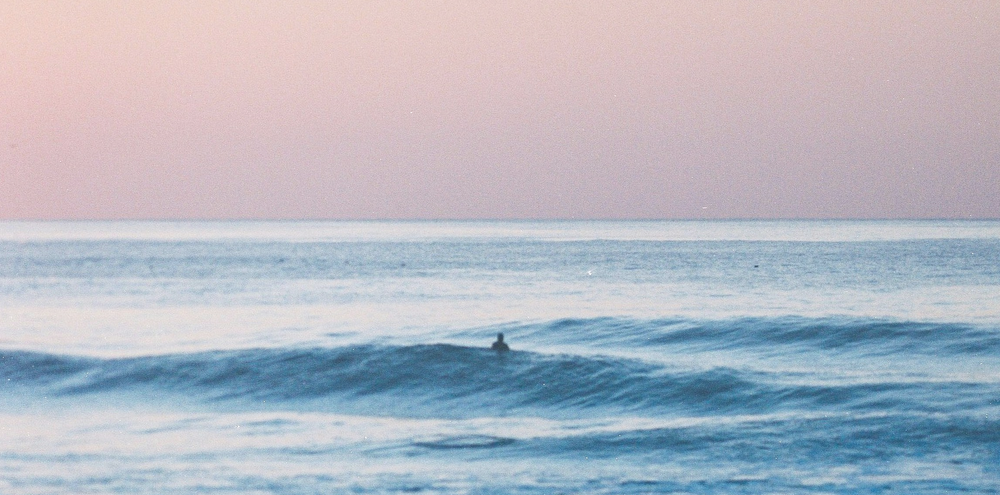
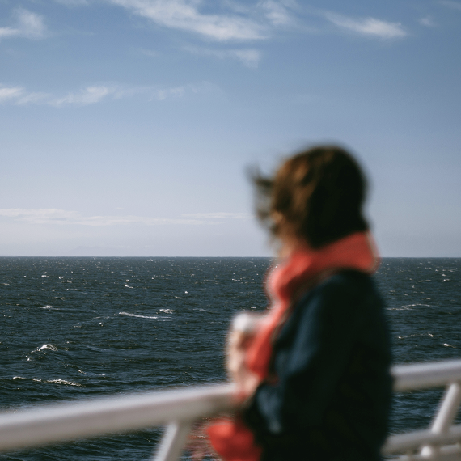
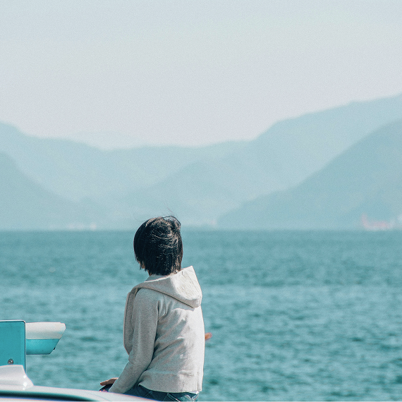

나만의 파도를 타는 가장 고요한 방법
일상에서 잠시 물러나 나만의 리듬을 되찾는 섬 여행


일상은 끊임없이 연결되어 있고,
그 소란함 속에서 우리는 문득
혼자이고 싶은 순간을 마주합니다.

기꺼운 수고 끝에
맞이하는 자유
혼자 떠나는 섬 여행은 처음엔 낯설고 어려울 수 있습니다.
배편을 확인하고, 낯선 선착장에 서고,
나에게 맞는 자리를 찾아가는 일은
분명 작고 번거로운 수고(toil)를 필요로 합니다.
그러나 그 수고로운 과정을 통과했을 때
우리는 비로소 외부의 방해로부터 해방되어
온전히 나에게만 집중하는 자유로운 시간에 도착합니다.

과잉된 정보에 피로를 느끼는
당신에게
‘더 많은 선택지’를 제안하는 대신
'자기 기준으로 선택할 수 있는 환경'을 제공합니다.

스스로 그리는 항로,
탐험을 돕는 도구
타인이 정해준 코스를 따라가는 대신
항로 지도를 통해 나만의 목적지를 직접 결정합니다.
우리는 그 여정이 가벼울 수 있도록
실용성에 감성을 담은 탐험 도구를 제안합니다.

일상에서 잠시 사라지는 것이 두렵더라도
스스로를 자발적 고립 속에 두는 당신의
용기를 지지합니다.
가장 평온한 당신만의 '토일(休日)'로
갑판 위에서 맞는 바람, 등대의 불빛을 이정표 삼아 걷는 산책, 오두막에서 누리는 정적.
이 모든 탐험은 흩어진 삶의 리듬을 되찾는 ‘자기 돌봄’의 과정입니다.
고된 과정을 지나 당신만의 평온한 토일로 가는 길, 그 여정에 우리가 함께하겠습니다.
Island discovery platform for Free Islanders
나만의 리듬으로 여행하는 이들을 위한 섬 탐험 플랫폼